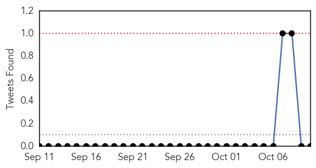
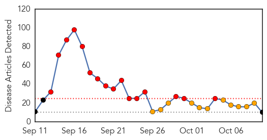
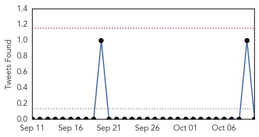
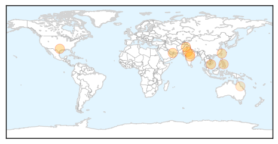
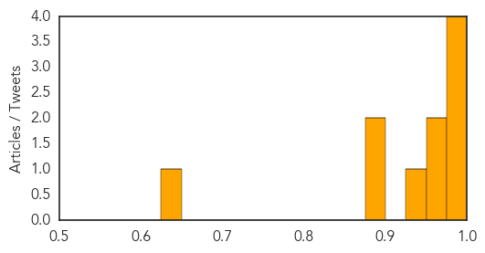

Swine Flu
30-Day Web Trend
4 alerts, 0 warnings

30-Day Twitter Trend
0 alerts, 0 warnings

Article Locations

Article Confidences

Top Articles:
Top Tweets:
- 0.807
- The virus returns: 70 swine flu cases reported in 5 days - The Times of India http://t.co/vw6jP0XV22 http://t.co/C61Q9MQe0c
Dengue Fever
30-Day Web Trend
16 alerts, 11 warnings

30-Day Twitter Trend
0 alerts, 0 warnings

Article Locations
Article Confidences
Top Articles:
- 0.990
- More scrub typhus cases than dengue reported in September in Jaipur's SMS hospital
- 0.990
- Modern Healthcare Modern Healthcare business news, research, data and events
- 0.977
- Despite Delhi government's order, doctors flocked abroad while dengue raged : India, News
- 0.976
- Dengue fever vaccine tests prove positive
- 0.963
- Woman wrongly diagnosed as dengue patient
- 0.958
- Dengue count 757, suspected deaths pile up for review
- 0.932
- Buy misting machines, towns told
- 0.898
- Dengue fever outbreak shows signs of slowing down in Tainan
- 0.886
- 49 dengue cases reported in September in Nagpur
- 0.638
- Doctors urge climate action
Top Tweets:
- 0.592
- Flavivirus news: 9 New Dengue Cases Reported in Jammu - NDTV: NDTV9 New Dengue Cases Reported i... http://t.co/IrEUKSyrPa pathogenposse